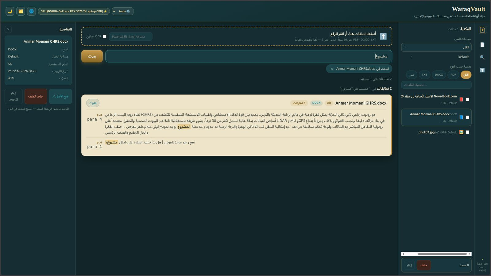
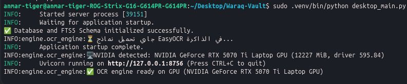
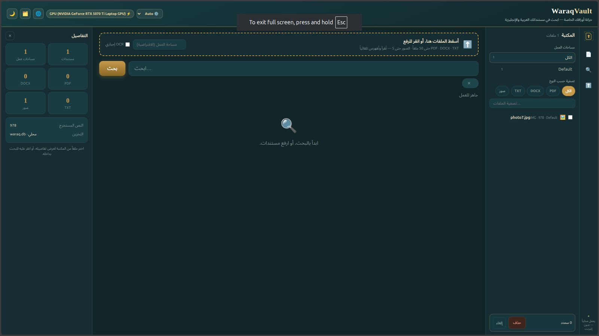

WaraqVault
An offline document vault for Arabic and English, with full-text search that understands how Arabic is actually written.

What it is
Searching Arabic text is harder than searching English, and most tools quietly fail at it. The same word can be written with or without tashkil — the diacritical marks that indicate short vowels. Alif appears as أ, إ, ٱ or ا. Taa marbuta and haa get swapped. A reader sees one word; a naive index sees five different strings, and a search for one finds none of the others.
WaraqVault normalises all of it before indexing, so a query matches the text however it happens to be vocalised — and highlights the match in the original, unmodified document.
The second constraint was privacy. Legal files, medical records, research material and personal archives are exactly the documents people are least willing to upload to someone else’s server. So WaraqVault does not have one. It is a Tauri desktop application with a SQLite FTS5 index living entirely on your machine, with OCR ingest through EasyOCR for scanned pages and images. No account, no sync, no network.
Drop in PDFs, DOCX files, plain text or images; they are read, OCR’d where needed, and indexed automatically. Workspaces keep separate collections apart, and search can be scoped to one document or run across everything.
It was built for the JOSA Reclaim Hackathon and now ships as Windows and Linux installers from the repository.
Open source
Clone it, build it, or download the installers.
Where it fits
Legal practice
Case files, contracts and filings searchable across years of archives, on a machine that never sends a document anywhere.
Academic research
Arabic primary sources with inconsistent vocalisation, searchable as one corpus rather than manually.
Newsroom archives
Fast retrieval across mixed Arabic and English material under deadline, offline in the field.
Regulated offices
Organisations whose policy forbids cloud document storage but still need real search.
Scanned collections
Paper archives digitised and OCR’d into a searchable index without a subscription.
Personal archive
Years of accumulated PDFs and documents turned into something you can actually find things in.
3 images

